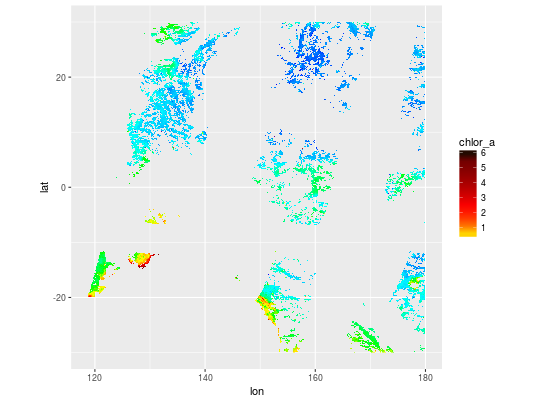

dplyr tbl cube from NetCDF
hyper_tbl_cube(x, ...) # S3 method for tidync hyper_tbl_cube(x, ...) # S3 method for character hyper_tbl_cube(x, ...) # S3 method for hyperfilter hyper_tbl_cube(x, ...)
| x | filename |
|---|---|
| ... | arguments for |
dplyr::tbl_cube
f <- "S20092742009304.L3m_MO_CHL_chlor_a_9km.nc" l3file <- system.file("extdata/oceandata", f, package= "tidync") (cube <- hyper_tbl_cube(tidync(l3file) %>% activate(chlor_a), lon = lon > 107, lat = abs(lat) < 30))#> Source: local array [630,720 x 2] #> D: lon [dbl, 876] #> D: lat [dbl, 720] #> M: chlor_a [dbl]library(ggplot2) scl <- function(x) {rng <- range(x, na.rm = TRUE); (x - rng[1])/diff(rng)} library(palr) pal <- chlPal(palette = TRUE) sfg <- scale_fill_gradientn(values = scl(head(pal$breaks, -1)), colours = pal$cols) ggplot(tibble::as_tibble(cube) %>% dplyr::filter(!is.na(chlor_a))) + geom_raster(aes(lon, lat, fill = chlor_a)) + sfg + coord_equal() #+#geom_polygon(data = ggplot2::map_data("world", #xlim = c(100, 180), #ylim = c(-30, 30)), aes(long, lat, group = group, fill = NULL))